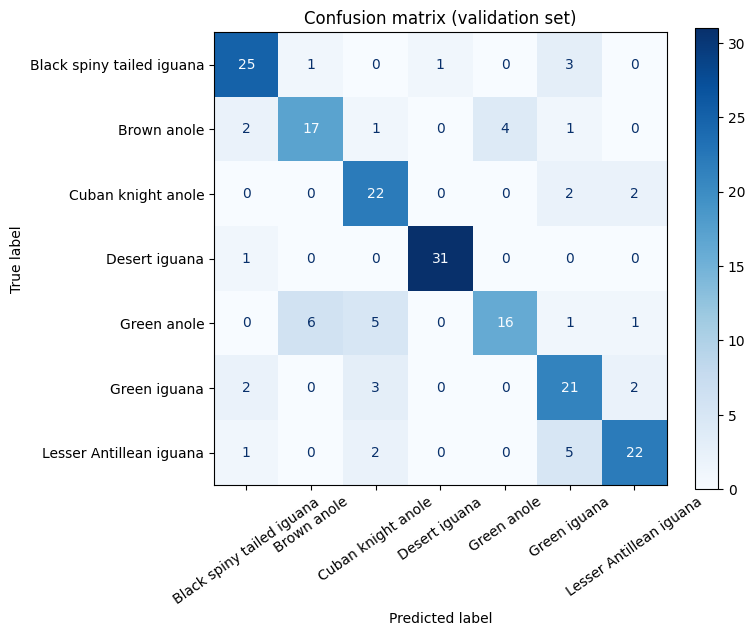
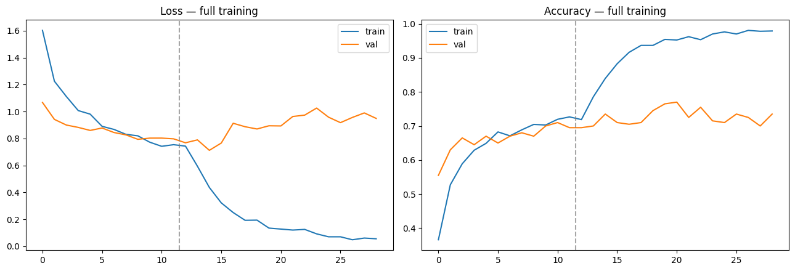

Deep Learning · Computer Vision · Team Project
Lizard Species Classification
A seven-class image classification project using EfficientNetV2S transfer learning, with data augmentation, fine-tuning and per-class evaluation. Achieved 77.0% validation accuracy and a macro F1 score of 0.7631 on 200 validation images.
Technology Stack
Overview
Developed as a three-person academic project, this classifier distinguishes seven lizard species. The work covered data preparation, transfer learning, fine-tuning and evaluation, with particular attention to differences in performance between visually similar classes.
Approach
We used an ImageNet-pretrained EfficientNetV2S backbone and 224 × 224 input images. Training began with a frozen backbone, followed by fine-tuning of upper layers. Data augmentation included flipping, rotation, zoom, translation and contrast adjustments. The final workflow also generated submission predictions using original and horizontally flipped images.
Evaluation
The dataset contained 1,334 labelled images, split into 1,134 training images and 200 validation images. The final model achieved 77.0% validation accuracy and a macro F1 score of 0.7631. A confusion matrix and per-class precision, recall and F1 scores helped identify which species remained difficult to distinguish.
All figures are measured on our held-out validation images. They are not a Kaggle leaderboard score or a production accuracy. The validation set came from a random shuffled split of the labelled training data.

Open Full Size
Open Full SizePer-class results
| Species | Precision | Recall | F1 | Images |
|---|---|---|---|---|
| Black spiny-tailed iguana | 0.806 | 0.833 | 0.820 | 30 |
| Brown anole | 0.708 | 0.680 | 0.694 | 25 |
| Cuban knight anole | 0.667 | 0.846 | 0.746 | 26 |
| Desert iguana | 0.969 | 0.969 | 0.969 | 32 |
| Green anole | 0.800 | 0.552 | 0.653 | 29 |
| Green iguana | 0.636 | 0.750 | 0.689 | 28 |
| Lesser Antillean iguana | 0.815 | 0.733 | 0.772 | 30 |
What the results show
Performance varied by class: Desert iguana reached an F1 score of 0.969, while Green anole reached 0.653. This highlighted the importance of examining class-level errors alongside overall accuracy.
Limitations
- The 200 validation images are a small sample, so each class has only 25 to 32 examples and the scores carry noticeable uncertainty.
- In Phase 2 training accuracy kept climbing while validation accuracy stayed around 70–77%, a sign of overfitting that stronger regularisation or more data would need to address.
- The training photos are not included on this site because I do not know their sharing rights, and there is no public repository or live demo for this project.
Role & Scope
A team project with José Gutiérrez Montero, Mateo Donado González and me. I contributed to model development and evaluation as part of the team.